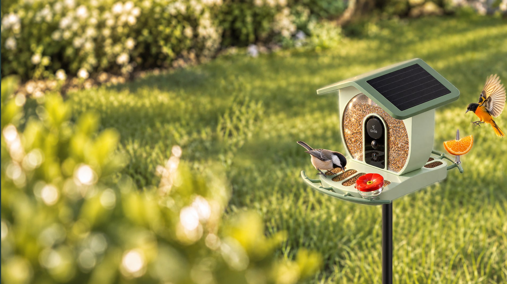

Aviio / Bird cameras
BF05 PRO
Resolution: 2K @30fps + 2K @30fps
Price to confirmView details
Aviio / Australia
A closer look at your garden visitors.
These are review candidates. The final launch selection, prices and stock are still to be confirmed.
2 products
Aviio / Bird cameras
Resolution: 2K @30fps + 2K @30fps
Price to confirmView details
Aviio / Bird cameras
Resolution: 4K @30fps
Price to confirmView detailsNo products match. Try another model or category.